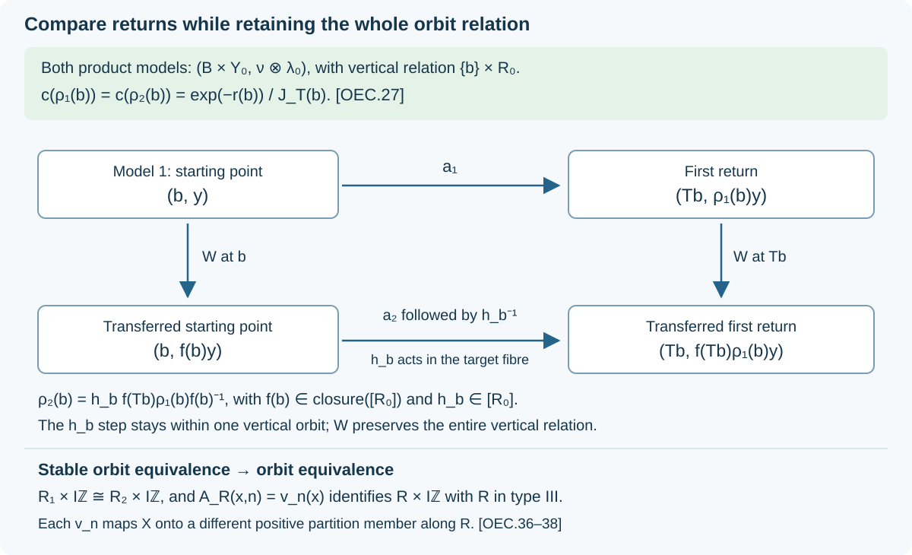

Orbit equivalence from the associated flow
The associated flow records the invariant functions of the Maharam lift. In the type III zero setting it determines an ergodic hyperfinite relation up to orbit equivalence. To recover the relation, we retain its diagonal algebra while identifying the components, normalize their invariant measures, compare the return maps, and finally remove a countable amplification.
Our point maps act on functions by inverse pullback. A forward Jacobian \(J_a\) satisfies \(\lambda(aC)=\int_C J_a\,d\lambda\). A conjugacy of measured flows preserves the measure class and the time parameter.
1. The classification statement and its inputs
Let \(R_i\) be ergodic hyperfinite countable principal relations on nonzero standard sigma-finite spaces \((X_i,\mu_i)\), for \(i=1,2\). Assume they are type III and their associated flows are properly ergodic. This is the type \(\mathrm{III}_0\) setting: properly ergodic means that no single flow orbit is conull.
Theorem. Under these hypotheses, \(R_1\) and \(R_2\) are isomorphic as measured relations if and only if their associated flows are conjugate.
A measured relation isomorphism is a Borel bijection between conull reductions, nonsingular in both directions, which takes every retained relation pair to a relation pair and does the same in reverse. The conclusion concerns the full relations, not only their factor algebras.
We use these programme proofs:
- 4. The dyadic criterion and the whole measured model supplies a free ergodic integer generator for a nonatomic ergodic hyperfinite relation, and uniqueness of the invariant type \(\mathrm{II}_\infty\) relation with its diagonal.
- 1. Coordinates and the construction to be proved through 9. The normalized conditional return law supplies return bands, the actual invariant component measures, the type \(\mathrm{II}_\infty\) components and the normalized return identity.
- 1. The geometric topology and the assertion, 6. Necessity and the continuous scaling invariant through 7. Realizing every positive scaling constant identifies the Polish geometric normalizer group, the closure of the full group, and all positive measure-scaling constants.
- 3. The limiting cohomology theorem through 4. Measurable flows and their return cocycles supplies cohomology reduction on a hyperfinite relation and the properly ergodic suspension model.
- 1. Objects and the existing symmetry proofs through 4. Weight transport on the entire finite left ideal supplies point realization, reconstruction of the entire relation from its diagonal pair, and the geometric standard unitaries at sigma-finite mass.
- MSF, Sections 2–5, Compact orthonormal frames and measurable dimension, The integral algebra and its exact commutant and Exact common-null-set localization of specified data, Patching the unique comparisons and Choose a witness after completing the measure supply the measurable standard fields, their full integral algebras, and measured selection.
All conull restrictions below are taken through countable families of tests and maps. No measurable choice is inferred merely from the existence of individual fibre isomorphisms.
2. An orbit isomorphism conjugates the associated flows
Suppose \(\phi:X_1\to X_2\) is a measured relation isomorphism. On \(X_1\), the pullback measure has a positive finite Borel density \(h\):
\[ \mu_2(\phi A)=\int_A h(x)\,d\mu_1(x). \tag{OEC.1} \]The sigma-finite Radon–Nikodym theorem applies because the bijection transports a finite-measure exhaustion of \(X_2\). Both measures have the same null sets.
Write \(\delta_i(y,x)\) for the forward modulus of \(R_i\). On a countable presentation of the arrows, the measure-change rule in RWT-01 gives
\[ \delta_2(\phi y,\phi x) =\frac{h(y)}{h(x)}\delta_1(y,x). \tag{OEC.2} \]Remove the null source exceptions and their saturation to retain this on every arrow.
Use Maharam coordinates with measure \(e^{-t}d\mu_i\,dt\), so an arrow from \(x\) to \(y\) changes the second coordinate by \(\log\delta_i(y,x)\). Define
\[ \widetilde\phi(x,t)=(\phi x,t+\log h(x)). \tag{OEC.3} \]Equation (OEC.2) proves that this is an isomorphism of the lifted relations: the two ways of transporting an arrow both give second coordinate \(t+\log\delta_1(y,x)+\log h(y)\). Changing variables using (OEC.1) gives
\[ e^{-(t+\log h(x))}\,h(x)\,d\mu_1(x)\,dt =e^{-t}\,d\mu_1(x)\,dt. \tag{OEC.4} \]The inverse uses \(\phi^{-1}\) and the inverse density. Thus the lift is a Borel measure isomorphism, and it commutes with every vertical translation. Pullback carries the entire invariant function algebra of one lifted relation onto that of the other, intertwining the translations. These invariant algebras are the associated flows by RCS-01. This proves necessity.
3. Two return models over one base
Now suppose the associated flows are conjugate. Identify both with one properly ergodic measured flow \(F\). The suspension theorem used in CLR-04 gives a standard probability base \((B,\nu)\), a nonsingular aperiodic ergodic Borel map \(T\), and a finite Borel roof \(r\geq2\varepsilon>0\), such that
\[ \Omega=\{(b,u):0\leq u<r(b)\} \tag{OEC.5} \]in the measure class \(\nu(db)\,du\), with upward flow and the identification \((b,r(b))=(Tb,0)\). The theorem constructs an invariant conull model and its product measure class. It does not restrict the ambient flow measure to a section of measure zero.
The relations \(R_i\) are nonatomic: an atom would give a conull countable orbit and an equivalent counting invariant measure, contradicting type III. AFM-04 therefore supplies free ergodic nonsingular integer actions generating them. Apply RBC to these actions and the common suspension. We obtain
\[ (Y_i,\lambda_i),\quad \widehat S_i,\quad a_i,\quad \pi_i:Y_i\to B \tag{OEC.6} \]with the following exact properties on conull Borel models. The action \(\widehat S_i\) preserves \(\lambda_i\), its relation \(E_i\) is hyperfinite, and
\[ \begin{aligned} L^\infty(Y_i,\lambda_i)^{E_i}&=\pi_i^*L^\infty(B,\nu),\\ \pi_i a_i&=T\pi_i,\qquad a_i\widehat S_i=\widehat S_i a_i,\\ \lambda_i(a_iC)&=\int_C e^{-r(\pi_i y)}\,d\lambda_i(y). \end{aligned} \tag{OEC.7} \]The combined relation generated by \(E_i\) and \(a_i\) is
\[ \langle E_i,a_i\rangle\cong R_i\times\mathcal I_{\mathbb Z}, \tag{OEC.8} \]where \(\mathcal I_{\mathbb Z}\) is the complete integer relation.
RBC-07 constructs the actual conditional invariant measures on the fibres of \(\pi_i\), using a finite normalization and then restoring the density. RBC-08 proves that almost every fibre is ergodic of type \(\mathrm{II}_\infty\). Restricting the finite exhaustion of \(E_i\) to a retained fibre preserves its finite classes and exhausts its arrows. Thus these component relations are hyperfinite of type \(\mathrm{II}_\infty\).
The next two sections identify these measured component relations over the whole base. Their measures need not yet be normalized alike.
4. A measurable identification of the entire diagonal pair
Fix a standard ergodic hyperfinite type \(\mathrm{II}_\infty\) relation \((R_0,Y_0,\lambda_0)\), with invariant measure \(\lambda_0\), and write
\[ M_0=M(R_0,\lambda_0),\qquad D_0=L^\infty(Y_0,\lambda_0). \tag{OEC.9} \]One model is the fair binary tail relation times \(\mathcal I_{\mathbb Z}\), with fair probability times counting measure. AFM-04 proves that each component of \(E_i\) is isomorphic to this relation, preserving its diagonal pair.
Here are the measurable details. RBC-07 identifies the actual component algebras in the central decomposition of \(M_i=M(E_i,\lambda_i)\). Decompose its standard form over \(L^\infty(B)\) using MSF. DC-09 identifies the full algebra field with those actual relation algebras, including the restrictions of the global diagonal \(D_i=L^\infty(Y_i,\lambda_i)\). Consequently the field has factor algebras \(M_{i,b}\), specified subalgebras \(D_{i,b}\), natural cones \(P_{i,b}\), and countable measurable strong-star dense contraction families in \(M_{i,b}\).
We also need dense families for \(D_{i,b}\). Choose a countable algebra of Borel subsets generating the Borel sets of \(Y_i\). Its indicator sections restrict to a generating family of each fibre diagonal. Simple functions on its finite partitions, with rational complex coefficients of modulus at most one, form a countable family dense in each diagonal unit ball for the strong-star topology. To verify density, approximate any bounded measurable function in measure for an equivalent probability on the fibre, pass to an almost-everywhere convergent subsequence, and use bounded dominated convergence on each Hilbert vector. This proves strong convergence of the multipliers and their adjoints. The family is measurable because its members are restrictions of global diagonal sections.
All standard Hilbert spaces here are separable and infinite dimensional. Use DF-02 to give them Borel orthonormal coordinates on one fixed Hilbert space \(H_0\), also carrying the standard form of \(M_0\). Denote the two algebra contraction families by \(m_j(b),m_k^0\), the diagonal families by \(d_j(b),d_k^0\), and dense cone-unit-ball families by \(\xi_j(b),\xi_k^0\). With a strong-star metric \(d_*\) on the contraction ball, impose on a unitary \(U\) the six families of tests
\[ \begin{aligned} \inf_k d_*(Um_j(b)U^*,m_k^0)&=0,& \inf_j d_*(U^*m_k^0U,m_j(b))&=0,\\ \inf_k d_*(Ud_j(b)U^*,d_k^0)&=0,& \inf_j d_*(U^*d_k^0U,d_j(b))&=0,\\ \inf_k\|U\xi_j(b)-\xi_k^0\|&=0,& \inf_j\|U^*\xi_k^0-\xi_j(b)\|&=0. \end{aligned} \tag{OEC.10} \]Every indexed test is required. These tests are Borel on \(B\times\mathcal U(H_0)\): the unitary group is Polish in the strong topology, conjugation is jointly strong-star continuous on bounded sets, and all displayed coordinate families are Borel. Countable infima preserve Borelness. Density and closedness make the tests equivalent to
\[ UM_{i,b}U^*=M_0,\qquad UD_{i,b}U^*=D_0,\qquad UP_{i,b}=P_0. \tag{OEC.11} \]Each section is nonempty. The pointwise relation isomorphism from AFM-04 gives an isomorphism of the diagonal pairs, and SE-10 gives its standard implementing unitary. Apply the completed-measure selection theorem SCF-05 and take its Borel version on a conull Borel base. This produces \(U_{i,b}\) satisfying (OEC.11). It is an actual selection argument; no arbitrary choices of component isomorphisms are presumed measurable.
The decomposable unitary with fibres \(U_{i,b}\) now gives a normal isomorphism
\[ (M_i,D_i)\cong \bigl(L^\infty(B,\nu)\,\overline\otimes\,M_0,\ L^\infty(B,\nu)\,\overline\otimes\,D_0\bigr). \tag{OEC.12} \]To check that it is onto, conjugate any bounded measurable target section by \(U_{i,b}^*\). The result is measurable and bounded in the source field, hence belongs to the full integral algebra by DC-04. The reverse conjugation is its inverse. The same argument applies to the entire diagonal field. This proves both full algebra equalities, not just agreement on countably many generators.
RSY-01–02 realizes the restriction of (OEC.12) to the diagonal by a nonsingular Borel bijection
\[ \Phi_i:Y_i\longrightarrow B\times Y_0 \tag{OEC.13} \]on conull subsets. Since (OEC.12) fixes the base algebra, a countable separating family of base functions proves \(\operatorname{pr}_B\Phi_i=\pi_i\) almost everywhere. Its reconstruction theorem proves that \(\Phi_i\) carries the whole \(E_i\) onto the vertical relation
\[ (b,y)\ E_0\ (b',y') \quad\Longleftrightarrow\quad b=b'\ \text{and}\ y\,R_0\,y'. \tag{OEC.14} \]Indeed the image of every presenting orbit unitary normalizes the target diagonal, so its point motion belongs to the target full group. Apply the same argument to the inverse and remove the countably many null exceptions and their saturations. Diagonal phases in those unitaries do not affect the point motions.
5. Normalizer fields and invariant measure normalization
Let \(G=\operatorname{Aut}(R_0)\), \(H=[R_0]\). FGN gives a Polish topology on \(G\), a Borel normal subgroup \(H\), and a continuous surjective homomorphism
\[ c:G\longrightarrow\mathbb R_{>0},\qquad \lambda_0(gC)=c(g)\lambda_0(C),\qquad \ker c=\overline H. \tag{OEC.15} \]The topology is the one of the geometric standard unitaries \(W_g\), not an unspecified topology on point representatives.
We first explain how a Borel map \(b\mapsto g_b\in G\) gives a usable point map on the product. The field \(W_{g_b}\) is strongly Borel by FGN-01. Its direct integral conjugates the whole algebra \(L^\infty(B)\overline\otimes M_0\) onto itself, preserves \(L^\infty(B)\overline\otimes D_0\), and fixes the base. The inverse field is \(W_{g_b}^*\), so the conjugation is normal and onto. RSY point realization and relation reconstruction therefore give a nonsingular Borel map
\[ Q(b,y)=(b,q(b,y)) \tag{OEC.16} \]preserving the vertical relation. For almost every \(b\), its fibre is the class \(g_b\). To verify this last assertion, compare the fibre actions on a countable generating family of bounded diagonal functions, in both directions; Fubini and countable separation identify the maps modulo \(\lambda_0\)-null sets. Thus (OEC.16) supplies a jointly Borel representative where one is needed. An uncountable family of arbitrary representatives was not evaluated.
Transport \(\lambda_i\) through \(\Phi_i\). The resulting sigma-finite measure \(\eta_i\) is equivalent to \(\nu\otimes\lambda_0\), so
\[ d\eta_i(b,y)=H_i(b,y)\,d\nu(b)\,d\lambda_0(y), \qquad 0<H_i<\infty\ \text{almost everywhere}. \tag{OEC.17} \]It is invariant under every vertical partial \(R_0\)-map, because \(\lambda_i\) is invariant under \(E_i\). The reference measure is invariant too. Uniqueness of Radon–Nikodym densities on a countable presentation of \(R_0\) proves that \(H_i(b,\cdot)\) is invariant almost everywhere, for almost every \(b\). Ergodicity of \(R_0\) makes it constant. Fix \(A_0\subset Y_0\) with \(\lambda_0(A_0)=1\) and set \(h_i(b)=\int_{A_0}H_i(b,y)\,d\lambda_0(y)\). This is a Borel function, positive finite on a conull base, and
\[ d\eta_i=h_i(b)\,d\nu(b)\,d\lambda_0(y). \tag{OEC.18} \]The relation \(\{(b,g):c(g)=h_i(b)\}\) is Borel with nonempty sections by (OEC.15). SCF-05 gives a Borel selector \(g_{i,b}\) on a conull base. Realize this field by \(Q_i\) as in (OEC.16). Its pushforward removes the density:
\[ (Q_i)_*\eta_i=\nu\otimes\lambda_0. \tag{OEC.19} \]For a product \(D\times C\), its mass is
\[ \int_D h_i(b)\lambda_0(g_{i,b}^{-1}C)\,d\nu(b) =\int_D\frac{h_i(b)}{c(g_{i,b})}\lambda_0(C)\,d\nu(b). \tag{OEC.20} \]This equals the reference product mass. Use finite-measure rectangles covering the product and measure uniqueness to obtain (OEC.19) for every Borel set. The forward multiplier must be \(h_i\); its inverse occurs because we are taking a pushforward.
Replace \(\Phi_i\) by \(Q_i\Phi_i\). We now have measure-preserving identifications
\[ (Y_i,\lambda_i,E_i,\pi_i) \cong(B\times Y_0,\nu\otimes\lambda_0,E_0,\operatorname{pr}_B). \tag{OEC.21} \]This construction uses separately selected normalizers for the required constants. It does not assume a coherent trace-scaling action that preserves the diagonal.
6. The return maps are Borel normalizer cocycles
Transport \(a_i\) through (OEC.21), keeping the same notation. Base preservation gives a jointly Borel expression
\[ a_i(b,y)=(Tb,\rho_i(b,y)). \tag{OEC.22} \]Its inverse gives the jointly Borel fibre inverse. For almost every \(b\), \(\rho_i(b,\cdot)\) is an invertible nonsingular map of \(Y_0\). Preservation of \(E_0\), tested on a countable presentation and on the inverse, says that its class belongs to \(G\).
Here is the full measure assertion, including the base Jacobian. Put
\[ \nu(TD)=\int_D J_T(b)\,d\nu(b). \tag{OEC.23} \]For a finite-\(\lambda_0\)-measure Borel set \(C\) and Borel \(D\subset B\), (OEC.7) and (OEC.21) give
\[ \begin{aligned} \int_D J_T(b)\lambda_0(\rho_i(b,C))\,d\nu(b) &=(\nu\otimes\lambda_0)(a_i(D\times C))\\ &=\int_D e^{-r(b)}\lambda_0(C)\,d\nu(b). \end{aligned} \tag{OEC.24} \]The left integrand is Borel: the jointly Borel inverse makes \(\{(b,z):z\in\rho_i(b,C)\}\) Borel, and integration preserves measurability. Both integrands are integrable. Equality for all \(D\) makes them equal almost everywhere.
Take a countable generating ring of finite-measure sets covering \(Y_0\). Intersect its conull equality sets. Uniqueness of measures on the resulting common finite-measure exhaustion proves, simultaneously for all Borel \(C\),
\[ \lambda_0(\rho_i(b,C)) =\frac{e^{-r(b)}}{J_T(b)}\,\lambda_0(C). \tag{OEC.25} \]This also proves fibre nonsingularity in both directions. The inverse identities and relation preservation have their own countable tests; discard their exceptional bases and all integer translates under \(T\).
We still need Borelness into the geometric topology of \(G\). For a geometric normalizer \(\rho\) with forward constant \(c(\rho)\), FGN-01 gives its unitary on \(H_0=L^2(R_0,\nu_s^{\lambda_0})\):
\[ (W_\rho\xi)(z,y) =c(\rho)^{-1/2}\xi(\rho^{-1}z,\rho^{-1}y). \tag{OEC.26} \]Here the inverse fibre maps are jointly Borel, and their constants in (OEC.25) are Borel. For vectors from a fixed countable dense family of Borel simple functions on finite-measure pieces of the relation, the matrix coefficients of (OEC.26) are Borel in \(b\), by parameter integration. Cauchy–Schwarz gives integrability; bounded truncations on a finite-measure exhaustion justify the same conclusion for the complex integrals. Approximation by the dense family extends it to every matrix coefficient. The unitary-coordinate argument in MSF-05 then proves that \(b\mapsto W_{\rho_i(b)}\) is Borel in the strong topology.
FGN-01 identifies \(G\) homeomorphically with its geometric unitary image. Therefore \(b\mapsto\rho_i(b)\) is a Borel \(G\)-valued map. Equation (OEC.25) becomes
\[ c(\rho_1(b))=c(\rho_2(b)) =\frac{e^{-r(b)}}{J_T(b)}. \tag{OEC.27} \]In particular \(\rho_2(b)\rho_1(b)^{-1}\in\overline H\). The factor \(J_T\) is retained even though it cancels when the two models are compared.
7. Cohomology reduction compares all return arrows
The base \(T\) is aperiodic and ergodic on a nonatomic standard probability space. AFM-03 gives an increasing finite exhaustion of its orbit relation \(R_T\), after a conull restriction. Its proof applies to an equivalent probability and to nonsingular, not necessarily measure-preserving, \(T\).
For each \(i\) define the \(G\)-valued arrow cocycle \(p_i\) on \(R_T\) by
\[ p_i(T^n b,b)= \begin{cases} \rho_i(T^{n-1}b)\cdots\rho_i(b),&n>0,\\ 1,&n=0,\\ p_i(b,T^n b)^{-1},&n<0 . \end{cases} \tag{OEC.28} \]Aperiodicity makes the integer \(n\) unique. The disjoint countable graph presentation makes this a Borel map. Multiplication of consecutive transports, including cancellation of inverse steps, proves its homomorphism law.
Apply \(c\) and use (OEC.27). The two scalar cocycles agree for every integer \(n\), so
\[ p_2(y,x)p_1(y,x)^{-1}\in\ker c=\overline H \quad((y,x)\in R_T). \tag{OEC.29} \]The hypotheses of CLR-03 are now all verified: \(G\) is Polish, \(H\) is Borel and normal, the base relation is hyperfinite, and (OEC.29) holds. It gives Borel maps \(f:B\to\overline H\) and \(h:R_T\to H\) with
\[ p_2(y,x)=h(y,x)f(y)p_1(y,x)f(x)^{-1}. \tag{OEC.30} \]The theorem's construction fixes each previously treated error exactly; it does not infer membership in the possibly nonclosed \(H\) by taking a limit. Its transfer \(f\) is allowed to lie in \(\overline H\).
Set \(h_b=h(Tb,b)\). On a return arrow,
\[ \rho_2(b)=h_b\,f(Tb)\rho_1(b)f(b)^{-1}. \tag{OEC.31} \]The map \(b\mapsto h_b\) is Borel. Realize the field \(f\) using Section 5, obtaining a Borel product map
\[ W(b,y)=(b,f(b)y). \tag{OEC.32} \]Since \(c(f(b))=1\), it preserves the product measure. It preserves the whole vertical relation because its fibres lie in \(G\).
Equation (OEC.31) identifies the return point motions modulo a vertical full-group map:
\[ Wa_1W^{-1}(b,y) =\bigl(Tb,h_b^{-1}\rho_2(b)y\bigr). \tag{OEC.33} \]The expression means a jointly Borel representative of the field maps, as constructed in Section 5. A countable separating family on \(Y_0\) makes (OEC.33) an almost-everywhere identity of product point maps. Since \(h_b\in H\), its two displayed target points are \(R_0\)-related. Thus every image of a first return arrow lies in \(\langle E_0,a_2\rangle\). The reverse implication follows from the same equation with \(h_b\), so
\[ W\langle E_0,a_1\rangle W^{-1} =\langle E_0,a_2\rangle. \tag{OEC.34} \]To make this equality hold on every retained arrow, remove its null exceptions and saturate under the countable vertical presentation, both return maps, \(W\), and their inverses. Each is nonsingular, so the removed set is still null. This proves an isomorphism of the full measured relations.

Figure 1. Both product models have measure \(\nu\otimes\lambda_0\). Their return multipliers are the same, including the base Jacobian. The transfer preserves the vertical relation; the remaining return error lies inside one vertical orbit. The final absorption in Section 8 removes \(\mathcal I_{\mathbb Z}\).
8. Absorb the integer amplification in type III
Combining (OEC.8), (OEC.21) and (OEC.34) gives
\[ R_1\times\mathcal I_{\mathbb Z} \cong R_2\times\mathcal I_{\mathbb Z}. \tag{OEC.35} \]We now prove why this implies the required unamplified conclusion in the present type.
Let \(R\) be any ergodic type III relation on a nonzero standard sigma-finite \((X,\mu)\). It is nonatomic, as in Section 3. Choose a countable partition \(X=\bigsqcup_{n\in\mathbb Z}X_n\) into positive Borel sets. For example choose an equivalent nonatomic probability and repeatedly cut the prescribed positive masses; the continuous distribution construction in MRA-02 supplies each cut. The type III comparison theorem MRA-02 gives nonsingular partial orbit bijections
\[ v_n:X\longrightarrow X_n \tag{OEC.36} \]on conull reductions. Remove the union of their null exceptions and its saturation under the countable relation. On the remaining conull space, all domains and partition ranges satisfy these identities simultaneously.
Define
\[ A_R:X\times\mathbb Z\longrightarrow X,\qquad A_R(x,n)=v_n(x). \tag{OEC.37} \]The ranges partition \(X\), so this is a Borel bijection with Borel inverse on the partition. It is nonsingular in both directions relative to \(\mu\) times counting measure: a subset of the product is null exactly when every sheet section is null, and each \(v_n\) preserves and reflects null sets.
Because \(v_n(x)\,R\,x\), for every pair of retained points we have
\[ v_n(x)\,R\,v_m(y) \quad\Longleftrightarrow\quad x\,R\,y. \tag{OEC.38} \]This is exactly the product relation condition, with no restriction on \(n,m\). Thus \(A_R\) is a measured relation isomorphism \(R\times\mathcal I_{\mathbb Z}\cong R\).
Apply this to \(R_1\) and \(R_2\), and compose with (OEC.35). It gives \(R_1\cong R_2\), completing sufficiency and the theorem.
9. Why the type hypothesis matters
The theorem does not assert that the associated flow alone distinguishes finite from infinite invariant measure.
Let \(E\) be the fair binary tail relation with its invariant probability \(P\), and let
\[ E^\infty=E\times\mathcal I_{\mathbb Z}, \qquad \lambda=P\otimes\#. \tag{OEC.39} \]AFM-04 identifies these as ergodic hyperfinite relations of types \(\mathrm{II}_1\) and \(\mathrm{II}_\infty\), respectively. Both have modulus one. Their Maharam lifts therefore keep the real coordinate fixed along relation arrows, and ergodicity makes the full invariant algebra precisely \(L^\infty(\mathbb R)\). The associated flow is real translation in both cases.
They are not isomorphic as measured relations. An isomorphism would transport \(P\) to an equivalent finite invariant measure \(\eta\) on \(E^\infty\). Write \(d\eta=k\,d\lambda\), with \(0<k<\infty\). Invariance of both measures makes \(k\) invariant under the countable relation presentation. Ergodicity makes \(k\) a positive constant. Then \(\eta(Y_0)=k\lambda(Y_0)=\infty\), a contradiction.
The failure occurs precisely in the absorption step: a finite invariant relation cannot be isomorphic to its infinite amplification. The theorem in Section 1 keeps the type III hypothesis throughout.
10. Exercises with complete solutions
Exercise 1. Suppose a product-coordinate measure is \(5\nu\otimes\lambda_0\). Which forward scaling constant should the fibre normalizer have to send it to \(\nu\otimes\lambda_0\)?
Solution. It should have \(c(g)=5\). The mass of a target set \(C\) is \(5\lambda_0(g^{-1}C)=5c(g)^{-1}\lambda_0(C)\). The reciprocal \(1/5\) would give factor \(25\), not factor one.
Exercise 2. Let \(J_T(b)=2\) and \(e^{-r(b)}=1/3\). Compute the forward fibre multiplier of each normalized return map.
Solution. Equation (OEC.27) gives \(c(\rho_i(b))=1/6\). Multiplying by the forward base Jacobian recovers the full product derivative \(2(1/6)=1/3\). The two fibre multipliers agree even when the base measure is not invariant.
Exercise 3. Why must the selector in Section 4 preserve the diagonal as well as the factor algebra?
Solution. The orbit reconstruction theorem reads point motions from the diagonal. An isomorphism of the bare factors supplies no specified identification of their function algebras. The middle two tests in (OEC.10) give the entire diagonal equality and therefore permit the actual point map \(\Phi_i\) and its relation reconstruction.
Exercise 4. If \(W a_1 W^{-1}(b,y)\) and \(a_2(b,y)\) differ by \(h_b\in[R_0]\), why is equality of the transformations unnecessary?
Solution. The generated relation already contains every vertical \(R_0\)-arrow. Appending the \(h_b\)-arrow converts either return into the other. This proves containment of all first return arrows in the second generated relation and the reverse containment. Since \(W\) also carries the entire vertical relation onto itself, the generated relations agree.
Exercise 5. In (OEC.37), why can different integer sheets have images in the same \(R\)-orbit without violating injectivity?
Solution. The ranges \(X_n\) of the point maps are disjoint, so their image points are distinct whenever the sheet indices differ. A measured relation isomorphism preserves equivalence of points, not equality of their entire orbits as subsets of the original coordinates. Equation (OEC.38) says exactly that cross-sheet equivalent points become distinct points of one orbit.
References
M. Takesaki, Theory of Operator Algebras III (2003), Chapter XVIII, Section 2, Theorem 2.1(iii), p. 314, and its type \(\mathrm{III}_0\) orbit-equivalence argument, pp. 325–326. The programme proofs linked above supply the suspension, relation approximation, standard-field, selection, and matching inputs.
Original exposition and diagram by OpenAI Codex (AI), October 2026. New text and diagram: CC0.